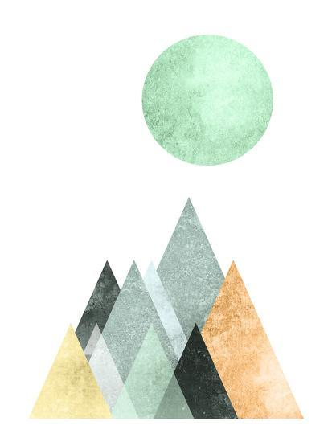

07 - Projeto da fase 1
Desenhar uma figura de inspiração com objetos 3D
Comandos:
- W: Frente
- S: Trás
- A: Esquerda
- D: Direita
- Page Up: Elevar da câmera
- Page Down: Descer câmera
- Mouse: Girar câmera
- Deve-se configurar a Camera deve se movimentar de acordo com o teclado ou mouse
- O Objeto deve ter pelo menos 2 movimentações absolutas e 1 relativas.
- Deve haver pelo menos 1 textura.
- Deve haver pelo menos 2 pontos de Luz.
Figura a ser desenhada:
